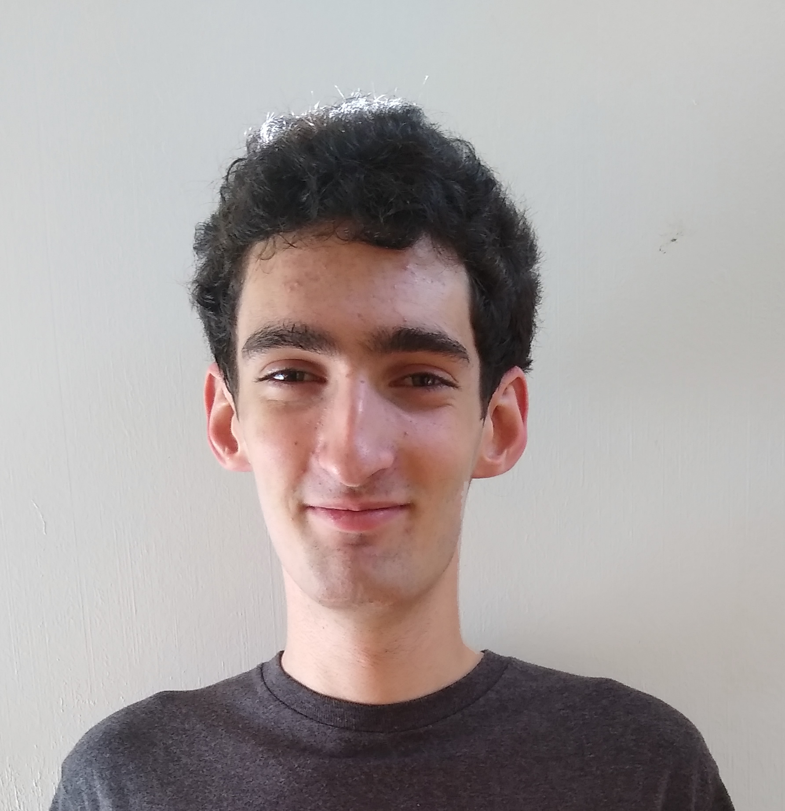

<div class="col-9 col-s-8">
    <h1>About me</h1>
    <p>
        Hello! I'm Elia Gorokhovsky. 
        I was born in Ann Arbor, MI but grew up in Boulder, CO. 
        I'm currently studying in Pasadena, CA, and hope to get a degree in math or computer science.
        My (very limited) experience is mainly in the scientific field of data assimilation 
        (combining mathematical models with data for a better understanding of the behavior of a dynamical system),
        but I've dabbled in game development, coding physics simulations, reinforcement learning, and creative writing.
        My hope is to be a positive influence on everyone I meet, and to spread a love of math wherever I go.
    </p>
</div>